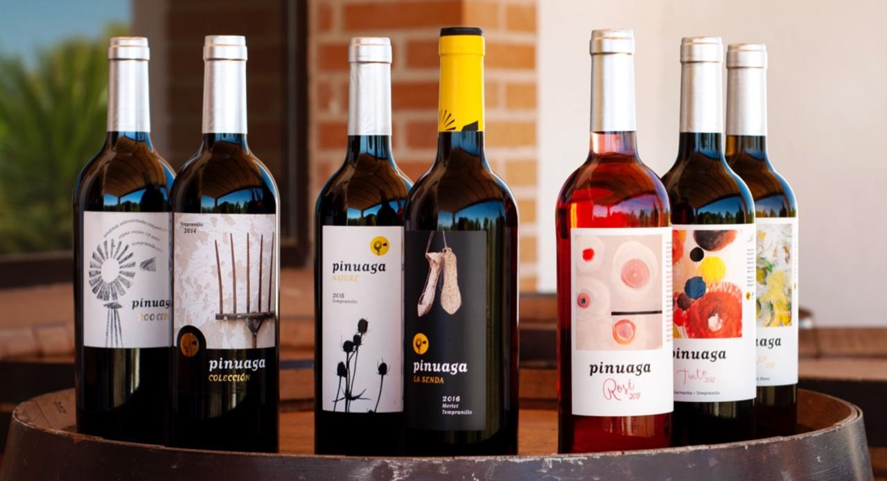

Red · Crianza
Colección
2020 · Tempranillo
Oak-aged, rounded and elegant. The family's table red.
Each bottle tells a plot, a year, a way of working. All organic, all native grapes, all made here.

Tempranillo · Old vines
The wine that defines us. From 200 century-old vines planted by our grandparents on red clay soil. Spontaneous fermentation and slow aging in French oak.
Deep notes of ripe fruit, sweet spice and that unmistakable mineral edge of La Mancha earth.
Labels hand-painted by Miguel Ángel Muñoz Zamora. Each one with its own personality.
Every wine carries an original piece by the artist Miguel Ángel Muñoz Zamora. A painting collection that travels with each bottle, which many of our clients collect as small works in their own right.